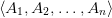
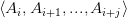
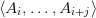

Let us consider a simple question, compute the nth Fibonacci number. The classically bad approach is
The runtime of this is 2n, as when we compute for each n we compute two more. But note that we call fib on smaller numbers. We call those “subproblems” as they are in the same format of the problem we are trying to solve except with smaller inputs.
The above solution is what we call an divide and conquer solution as it splits the problem into smaller sub-problems which it then solve. Divide and conquer algorithms work well when all the subproblems are unique, but when there are overlapping subproblems as is the case of the Fibonacci’s, divide and conquer is doing a lot of extra work that it doesn’t have to. To solve this, we use dynamic programming.
Dynamic programming approaches allows us to only solve the distinct subproblems and drastically decrease the runtime. There are two ways to do this, one is known as the top-down memoized approach, and the other is the bottom-up tabular approach:
In the first example we “memoize” or remember the unique subproblems we’ve solved, and use them to solve new problems, and in the second example we solve all the unique subproblems in a sorted order and store them in a table.
Memoization is often times easier to do, but creates a lot of memory overhead and is often less versatile, as often times we use the structure of the subproblems to our advantage which can only be gained by a tabular structure. To see these in action, let us step through some examples.
Problem: Given a list of matrices , in what order should we multiply so that the total number of computations is the lowest.
Subproblem: Given a list of matrices , how should we parenthesize so that the total number of computations is the lowest.
Substructure: In order to parenthesize , there exists a k between i and j such that the total cost of multiplication by doing (AiAi+1…Ai+k)(Ai+k+1…Ai+j) is the lowest. Note that we know the cost of Ai…Ai+k as that is a shorter sequence and we are building a table from the ground up.
Base Case: if j = 0 then the cost is 0.
Algorithm:
Problem: Given a knapsack of capacity W, a list of n items each with value vi and weight wi, find an algorithm to maximize
Subproblem: maximize the list under the constraint that the total weight is less than j and only use up to item i, store the result of 2d array dp
Substructure: when we compute dp[i][j], we can either include the ith item or not. If w i > j, then it is equal to dp[i − 1][j]. If it is not, then we have
Base case: using no items means we have 0 value
Algorithm:
Problem: Given two strings, how many edits do we need to change one into the other (edits include insertion, deletion and substitution).
Subproblem: in order to edit one string to fit another, we must edit its substring to fit the substring of the other.
Substructure: at every letter, we can either insert, delete or substitute, we know the cost to get the prefix of the two strings to be the same, so we pick the path that is the easiest.
Base Case: if one string is empty then the edit distance is the length of the other.
Algorithm:
Problem: Given an array of integers, define a subsequence as the result of deleting some elements in the array without changing the order of the remaining elements, what is the longest increasing subsequence of any given array
This problem is slightly more involved, we calculate the longest increasing subsequence of length 1, 2, 3, ... up to the longest one that exists. We also keep track of the values at the endpoints, which are the lowest last number of the LIS of length i. And since we are working with strictly increasing subsequences, the list of endpoints will be sorted, which allows us to perform a binary search, reducing the total runtime to n log n
These problem are what are known as the classic dynamic programming problems. There are many more as DP is more of a mindset rather than a specific technique. But in general DP can be applied to problems with the following two properties:
For problems with those properties, our next step is to find the base case and the recurrence relationship (mathematically), and finally we write up the code.